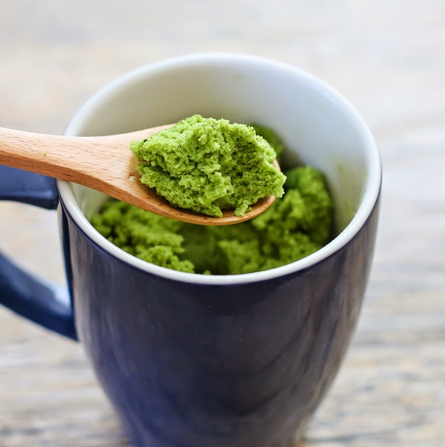

Matcha Green Tea Mug Cake

I like my dessert not too sweet, a 4:1 flour to sugar ratio seems to be the perfect spot!
If you love your matcha as much as I do, and do not want to spend hours baking a match cake, try this simple 3 mins microwave mug cake!
Ingredients
- 4 tbsp (30 g) all-purpose flour
- 1 tsp matcha powder
- 1/4 tsp baking powder
- 1 tbsp (12.5 g) granulated white sugar
- 3 tbsp (45 ml) milk
- 1/2 tbsp (7.5 ml) vegetable oil
Instructions
- In a microwave-safe mug, add flour, matcha powder, baking powder and sugar. Whisk until evenly blended and no lumps remain. You want to make sure to break apart any matcha or flour lumps before adding the liquid.
- Add in milk and oil. Mix with whisk until batter is smooth and uniform in color. Cook in the microwave at full power for about 1 minute. Let cake cool for a few minutes before eating.
Source: Kirby's Kravings
About